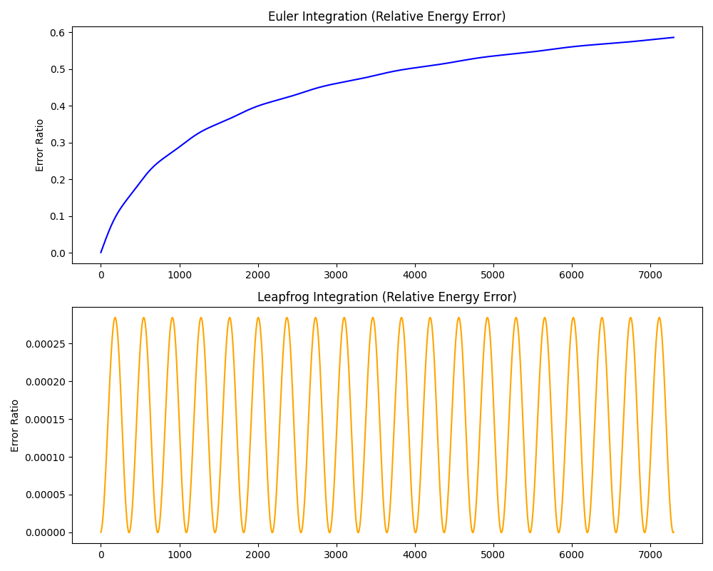

A system of bodies, simulated under the influence of physical forces.
threading.Lock to isolate the Pygame render-viewport frame-rate from the physics integration passPosition, velocity, and force represented as 3D vectors for every body.
Distant clusters of mass are approximated instead of compared body-by-body, cutting complexity to O(N log N).
Gravity calculations run as batched array operations instead of Python loops.
Physics and rendering run on separate threads, keeping the simulation smooth as N grows.
Leapfrog (Störmer-Verlet) integration was chosen over Euler because it is symplectic, it preserves the geometric structure of Hamiltonian systems, keeping orbital energy bounded rather than drifting over time.
Gravitational force is softened near close encounters (F = Gm₁m₂ / (r² + ε²)^1.5) to prevent singularities as r → 0, bounding the maximum force at small separations while preserving accuracy at larger distances.

Orbital periods were validated against the NASA Planetary Fact Sheet by tracking cumulative angular displacement (2π radians) relative to the Sun using the Leapfrog integrator.
| Body | Target Period (days) | Simulated Period (days) | Error (days) | Accuracy |
|---|---|---|---|---|
| Mercury | 87.97 | 87.96 | 0.01 | 99.99% |
| Venus | 224.70 | 224.12 | 0.58 | 99.74% |
| Earth | 365.26 | 364.92 | 0.34 | 99.91% |
| Mars | 686.98 | 686.12 | 0.86 | 99.87% |
| Jupiter | 4,332.59 | 4,332.12 | 0.47 | 99.99% |
| Saturn | 10,759.22 | 10,720.96 | 38.26 | 99.64% |
| Uranus | 30,688.50 | 30,277.46 | 411.04 | 98.66% |
| Neptune | 60,182.00 | 59,518.08 | 663.92 | 98.90% |
Reference: NASA Planetary Fact Sheet
| Method | Time (N=500, 50 steps) | Relative Speed |
|---|---|---|
| Barnes-Hut pure Python | 100.1s | 3x slower |
| O(N²) pure Python | 33.07s | baseline |
| NumPy vectorized | 0.835s | 39.6x faster |
Barnes-Hut underperforms at N=500 due to pure Python tree construction and recursive traversal overhead, expected at low N. NumPy vectorization wins at this scale by replacing per-pair Python object allocation with vectorized operations in compiled C. A NumPy + Barnes-Hut hybrid is the planned next step to reach the particle counts where Barnes-Hut's O(N log N) advantage dominates.
Benchmarked on Python 3.14 · Intel i5-14400F · Windows 11 Pro